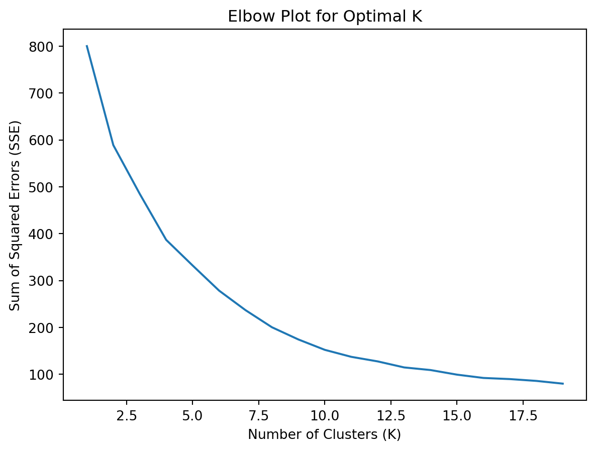
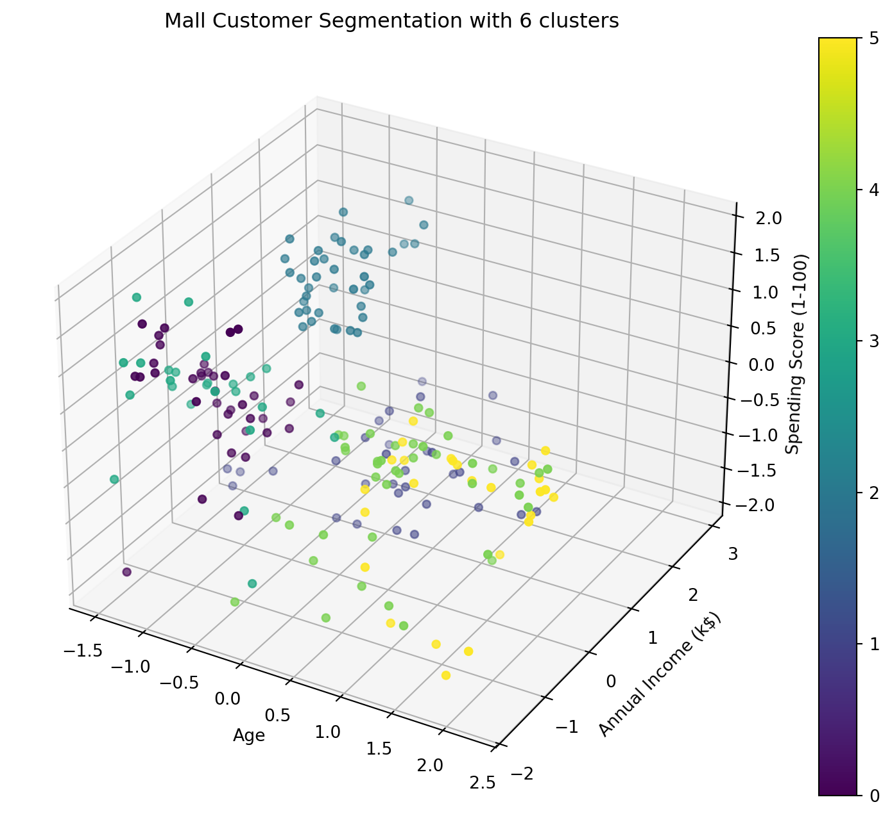

Have you ever wondered how Netflix seems to know exactly what show you’ll love next? Or how Amazon always recommends products you didn’t even realize you needed until it pops up on your home page? How do they get so smart and know you so well?
Netflix’s intelligent recommendations
These smart recommendations aren’t because your devices are eavesdropping on you…well, maybe they do. But! They’re actually powered by amazing data science techniques like K-means clustering!
In this tutorial, we’ll introduce the magic of K-means clustering in a nutshell, exploring how it works and how it can help you play around with everyday data you’re interested in, from analyzing social media trends, to enhancing your learning projects. (Or just for fun!)
So, what is K-means clustering?
Before diving into writing fancy code to explore our example dataset, let’s familiarize ourselves with some key terminology.
First, what is clustering? According to wikipedia, it is the process of dividing a set of objects into groups (called clusters), where objects within the same group are more similar to each other than to objects in other groups (Wikipedia, 2025). Just as people naturally seek out others with shared interests and form small social circles, clustering algorithms group data points based on their shared features.
Different animals can be clustered based on their features, and probably, different memes!
The K-means clustering is one of the most used clustering algorithms. The “K” stands for the number of groups you choose. “Means” comes from finding the average (or center) of each group. So basically, K-means clustering groups data into K clusters by assigning each point to the closest center, using straight-line distance between the point and the center. Then, it recalculate the center of each group. The new center is the average of all the points in that group. The process keeps repeating until all the centers and groups are as stable as possible. Easy peasy right?
K-means clustering precedures
However, there’s one more challenge: choosing the right K. If you select too few groups, the groups may be too broad; if you pick too many, the groups may become overly specific. So, how do we find the best number? This is where the Elbow Method comes to the rescue!
The Elbow Method helps find the best number of clusters by looking at how the Sum of Squared Errors (SSE, a measure of how far the data points are from their group centers) changes as K increases. When K is small, increasing it reduces the error a lot. But after a certain point, increasing K doesn’t reduce the error much. The K value where this happens will be the sweet spot.
But there’s a trade-off. If we pick a really large K, we might get too many groups. This could break the data into tiny, unhelpful segments, making it harder to find useful patterns. So, it’s important to choose the right K, so that we can have enough groups to be useful, but not so many that they become meaningless. We’ll explore more about this in the coding section.
Time to code!
Now that we’ve gotten the hang of the core concept of K-means, what better way to really get it than giving it a go ourselves?
We’ll be using some handy Python packages: pandas, matplotlib, and scikit-learn. Make sure you have them installed! If not, you can easily install them via the command line using pip:
pip install pandas matplotlib scikit-learn
In this practice, we’ll work with a dataset of mall customers (Sudheer, 2022). You can download the dataset here. This dataset contains some interesting facts about the customers, including their CustomerID, Gender, Age, Annual Income (k$), and Spending Score (1-100) (a score based on customer behavior and purchasing habits). As the data scientist for the company, your task today is to identify distinct customer profiles via K-means clustering, so that the mall can make wiser decisions about which products to offer and which ads to display for the right customers.
After downloading the dataset Mall_Customers.csv into the current directory, we’ll load the data and clean it up a bit, such as removing any irrelevant properties for clustering.
import pandas as pdimport matplotlib.pyplot as pltfrom sklearn.cluster import KMeans# Read the data and print some head rowsdata = pd.read_csv("Mall_Customers.csv")print(data.head(5))# Drop the CustomerID column and print some head rowsdata_drop_ID = data.drop("CustomerID", axis=1)print(data_drop_ID.head(5))
CustomerID Gender Age Annual Income (k$) Spending Score (1-100)
0 1 Male 19 15 39
1 2 Male 21 15 81
2 3 Female 20 16 6
3 4 Female 23 16 77
4 5 Female 31 17 40
Gender Age Annual Income (k$) Spending Score (1-100)
0 Male 19 15 39
1 Male 21 15 81
2 Female 20 16 6
3 Female 23 16 77
4 Female 31 17 40
It looks like our data still needs a little makeover. Some columns contain text, while others have numeric values with different ranges. This can make it tricky when calculating distances for clustering. To resolve this, we’ll need to encode the text data and scale the numeric data so that everything is on the same level before clustering.
from sklearn.preprocessing import LabelEncoder, StandardScalerlabel_encoder = LabelEncoder()scaler = StandardScaler()# Encode the 'Gender' column, turning "Male" and "Female" into numbers 1 and 0data_drop_ID['Gender'] = label_encoder.fit_transform(data_drop_ID['Gender'])# Scale the features so they're on the same scaledata_scaled = scaler.fit_transform(data_drop_ID[data_drop_ID.columns])# The cleaned datasetfinal_data = pd.DataFrame(data_scaled, columns=data_drop_ID.columns)print(final_data.head(5))
Finally, We can start with K-means! Keep the basic steps in mind as we loop through different K values and use the elbow method to find the best K. Let’s get clustering!
# Convert the data into a format suitable for clusteringX = final_data.values# Create a list to store the Sum of Squared Errors for each K valuesumDs = []# Try different values of Kfor i inrange(1, 20): kmeans = KMeans(n_clusters=i) # Create a KMeans model with K clusters kmeans.fit(X) # Fit the model to our data, grouping the data points into K clusters sumDs.append(kmeans.inertia_) # Add the SSE for the current K to the list# Plot the Elbow plot to find a reasonable Kplt.plot(range(1, 20), sumDs)plt.title('Elbow Plot for Optimal K')plt.xlabel('Number of Clusters (K)')plt.ylabel('Sum of Squared Errors (SSE)')plt.show()

You’ll probably see that K=20 gives the smallest SSE, but remember, too many clusters might make the results meaningless! So instead of picking the K that gives the smallest error, we might go with K=6, where the error still decreases but the rate of improvement slows down a lot.
And here it is, the moment of truth. Let’s see how our clustering results look with K=6 in 3D!
from mpl_toolkits.mplot3d import Axes3D# Fit KMeans with K=6kmeans = KMeans(n_clusters=6)segmentation = kmeans.fit_predict(final_data)final_data['Segmentation'] = segmentation# Create a 3D plotfig = plt.figure(figsize=(10, 8))ax = fig.add_subplot(111, projection='3d')scatter = ax.scatter( final_data['Age'], final_data['Annual Income (k$)'], final_data['Spending Score (1-100)'], c=final_data['Segmentation'], cmap='viridis')ax.set_xlabel('Age')ax.set_ylabel('Annual Income (k$)')ax.set_zlabel('Spending Score (1-100)')ax.set_title('Mall Customer Segmentation with 6 clusters')plt.colorbar(scatter)plt.show()

Wrap up!
And there you go! We’ve just built our very first K-means clustering project! Pretty neat, right?
Let’s quickly recap what we’ve learned. K-means clustering is a powerful technique for grouping similar data points and performing segmentation. We’ve covered the fundamentals, including the steps involved in K-means clustering and how the Elbow Method can help us determine the optimal number of clusters.
However, there are several important aspects of K-means clustering that we haven’t covered. For instance, K-means can be easily affected by outliers (abnormal data points with extreme values), which may lead to poor clustering. Exploring ways to address the outliers can help improve results. Additionally, there are ways other than the elbow method that can help check how good our clusters are, such as Silhouette Coefficient, which checks how similar items are within a group.
This is just the first steps into the world of unsupervised learning, and there’s so much more to explore! Don’t hesitate to apply what you’ve learned to your own ideas! And of course, stay tuned for more exciting sharings!
References
Wikipedia contributors. 2025. “Cluster Analysis.” Wikipedia. Retrieved from https://en.wikipedia.org/wiki/Cluster_analysis.
Nelakurthi Sudheer. 2022. Mall Customer Segmentation, Version 1. Retrieved from https://www.kaggle.com/datasets/nelakurthisudheer/mall-customer-segmentation/data.
Pedregosa, F., Varoquaux, G., Gramfort, A., Michel, V., Thirion, B., Grisel, O., Blondel, M., Prettenhofer, P., Weiss, R., Dubourg, V., Vanderplas, J., Passos, A., Cournapeau, D., Brucher, M., Perrot, M., & Duchesnay, E. (2011). Scikit-learn: Machine learning in Python. Journal of Machine Learning Research, 12, 2825–2830.
The pandas development team. (2020). pandas-dev/pandas: Pandas (Version latest). Zenodo. https://doi.org/10.5281/zenodo.3509134
Hunter, J. D. (2007). Matplotlib: A 2D graphics environment. Computing in Science & Engineering, 9(3), 90–95. https://doi.org/10.1109/MCSE.2007.55